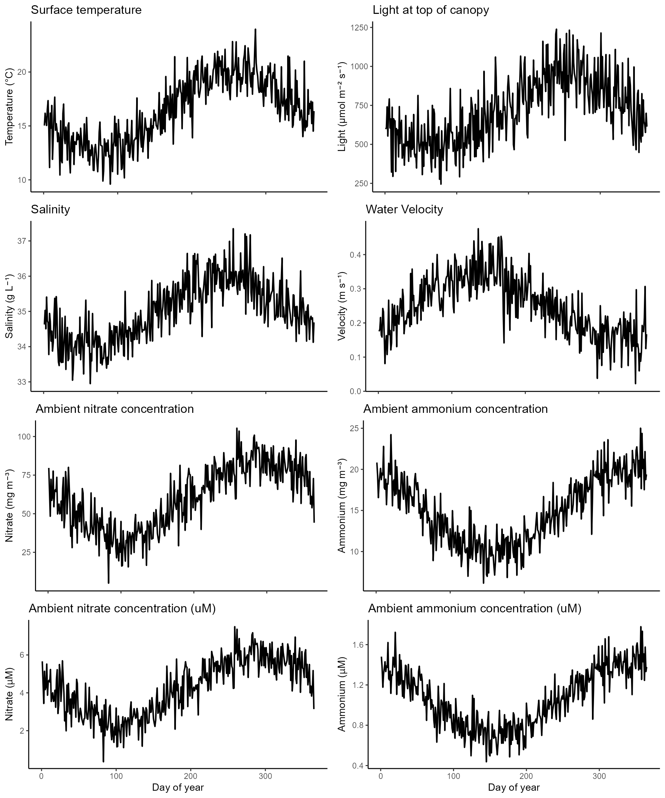

Grow macroalgae
Tormey Reimer
2025-07-10
grow-macroalgae.RmdThis space will be used to detail how to use the main model function,
grow_macroalgae().
## Warning: package 'units' was built under R version 4.4.3## udunits database from C:/Users/treimer/AppData/Local/Programs/R/R-4.4.2/library/units/share/udunits/udunits2.xml##
## Attaching package: 'lubridate'## The following objects are masked from 'package:base':
##
## date, intersect, setdiff, union## Warning: package 'ggplot2' was built under R version 4.4.3## Warning: package 'cowplot' was built under R version 4.4.3##
## Attaching package: 'cowplot'## The following object is masked from 'package:lubridate':
##
## stampLoad datasets
Within this package, there are three default datasets:
-
envis a datafrae of default environmental variables -
a_armatais a named vector of parameters for Asparagopsis armata -
site_paramsis a named vector of site-specific parameters (culture conditions)
Check environmental data
First let’s check to make sure our environmental inputs look reasonable. You should also check that they are within the species tolerance limits or the macroalgae will not grow (or maybe that’s what you want).
p_temperature <- ggplot(env, aes(x = t, y = temperature)) +
geom_line(linewidth = 0.75) +
theme_classic() +
labs(x = "Day of year", y = "Temperature (°C)") +
ggtitle("Surface temperature")
p_light <- ggplot(env, aes(x = t, y = (light*exp(-(kW*site_params['d_top']))))) +
geom_line(linewidth = 0.75) +
theme_classic() +
labs(x = "Day of year", y = "Light at canopy top (μmol m⁻² s⁻¹)") +
ggtitle("Light at top of canopy")
p_salinity <- ggplot(env, aes(x = t, y = salinity)) +
geom_line(linewidth = 0.75) +
theme_classic() +
labs(x = "Day of year", y = "Salinity (g L⁻¹)") +
ggtitle("Salinity")
p_velocity <- ggplot(env, aes(x = t, y = velocity)) +
geom_line(linewidth = 0.75) +
theme_classic() +
labs(x = "Day of year", y = "Velocity (m s⁻¹)") +
ggtitle("Water Velocity")
p_nitrate <- ggplot(env, aes(x = t, y = nitrate)) +
geom_line(linewidth = 0.75) +
theme_classic() +
labs(x = "Day of year", y = "Nitrate (mg m⁻³)") +
ggtitle("Ambient nitrate concentration")
p_ammonium <- ggplot(env, aes(x = t, y = ammonium)) +
geom_line(linewidth = 0.75) +
theme_classic() +
labs(x = "Day of year", y = "Ammonium (mg m⁻³)") +
ggtitle("Ambient ammonium concentration")
plot_grid(
p_temperature, p_light, p_salinity, p_velocity, p_nitrate, p_ammonium,
ncol = 2
)
Get initial macroalgae stat
Three values are required for macroalgae initialisation:
,
,
and
.
,
must be in mg
m
and can be calculated from an initial biomass using
biomass_to_Nf().
init_biomass <- 0.005 %>% set_units("g L-1") %>% set_units("mg m-3") %>% drop_units()
init_NfNs <- biomass_to_Nf(
biomass = init_biomass,
Q_rel = 0.5,
spec_params = a_armata,
dry = T
)
init_state <- c(init_NfNs, Q_rel = 0.5)Check all inputs
Since the grow_macroalgae() function has so many inputs
with very specific requirements, the check_grow() function
is designed to take the exact same inputs as
grow_macroalgae() and provide a report.
check_grow(
t = 1:60,
temperature = env$temperature[1:60],
salinity = env$salinity[1:60],
light = env$light[1:60],
kW = env$kW[1:60],
velocity = env$velocity[1:60],
nitrate = env$nitrate[1:60],
ammonium = env$ammonium[1:60],
ni_uptake = NA,
am_uptake = NA,
site_params = site_params,
spec_params = a_armata,
initials = init_state,
# sparse_output = T,
# other_constants = c(s = 0.0045, gam = 1.13, a2 = 0.2^2, Cb = 0.0025)
)## Starting all checks...
## ✔ Timeseries looks good.
## ✔ Variable 'temperature' looks good.
## ✔ Variable 'salinity' looks good.
## ✔ Variable 'light' looks good.
## ✔ Variable 'kW' looks good.
## ✔ Variable 'light' looks good.
## ✔ Variable 'velocity' looks good.
## ✔ Variable 'nitrate' looks good.
## ✔ Variable 'ammonium' looks good.
## ✔ Site params looks good.
## ✔ Variable Nf in initials looks good.
## ✔ Variable Q_int/Q_rel in initials looks good.
## → spec_params has provided linear parameters for nitrate. Uptake will use linear kinetics.
## → spec_params has provided parameters for both Michaelis-Menton and linear uptake for ammonium. Uptake will default to Michaelis-Menton kinetics.Grow macroalgae
gro <- grow_macroalgae(
t = 1:60,
temperature = env$temperature[1:60],
salinity = env$salinity[1:60],
light = env$light[1:60],
kW = env$kW[1:60],
velocity = env$velocity[1:60],
nitrate = env$nitrate[1:60],
ammonium = env$ammonium[1:60],
ni_uptake = NA,
am_uptake = NA,
site_params = c(site_params, turbulence = NA),
spec_params = a_armata,
initials = init_state,
# sparse_output = T,
# other_constants = c(s = 0.0045, gam = 1.13, a2 = 0.2^2, Cb = 0.0025)
)